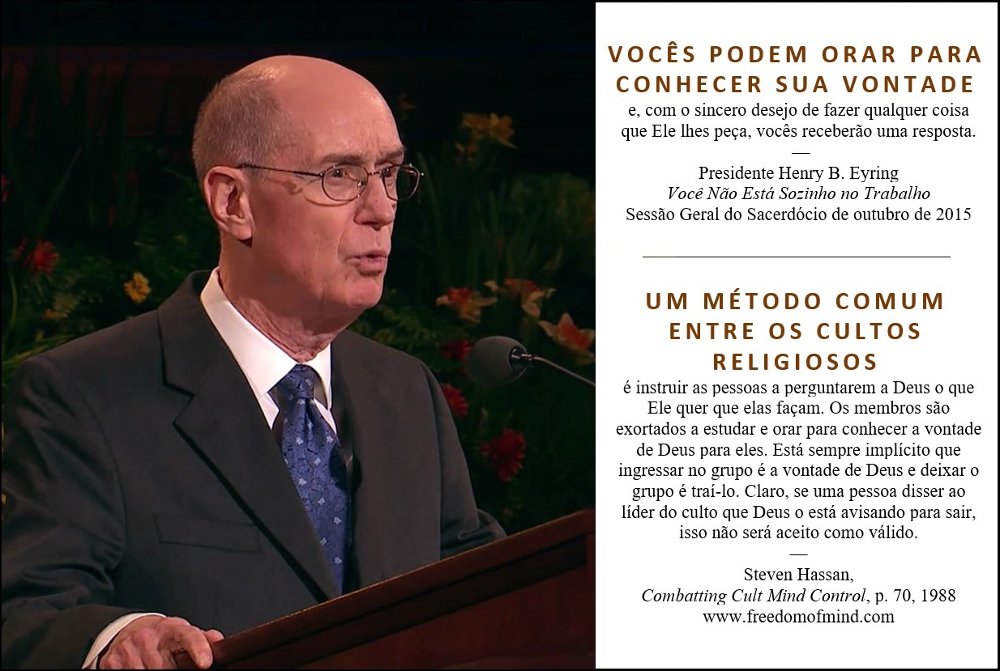
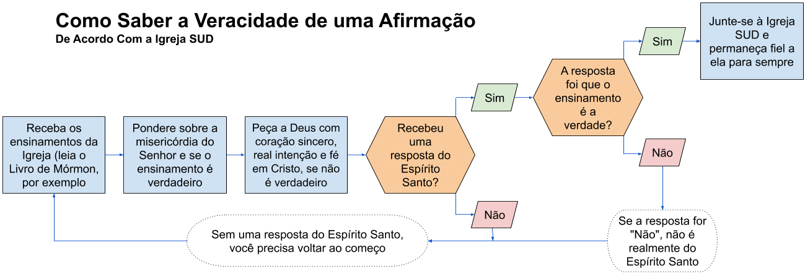

1 Agora eu,
Morôni, escrevo algo que me parece bom; e escrevo a meus irmãos,
os lamanitas; e quero que saibam que se passaram mais de
quatrocentos e vinte anos desde que foi dado o sinal da vinda de Cristo.
Os líderes SUD
anteriores e várias referências em Doutrina e Convênios deixam claro que os
lamanitas para os quais Morôni está escrevendo eram os nativos americanos
(assim como as pessoas das ilhas do Pacífico, segundo os líderes). Agora, os
líderes SUD não nos dizem quem são os lamanitas. Para quem é que Morôni está
escrevendo?
2 E depois de
vos dizer algumas palavras a título de exortação, selarei estes
registros.
3 Eis que
desejo exortar-vos, quando lerdes estas coisas, caso Deus julgue prudente que
as leiais, a vos lembrardes de quão misericordioso tem sido o Senhor para com
os filhos dos homens, desde a criação de Adão até a hora em que receberdes estas
coisas, e a meditardes sobre isto em vosso coração.
Observe que o autor
do versículo pede ao leitor para ponderar, mas não para refletir sobre as
evidências ou os méritos do material lido. Em vez disso, o autor exorta o
leitor a refletir sobre quão misericordioso o Senhor tem sido. O leitor é
lembrado de uma dívida de gratidão. Como ser social, uma pessoa normal deseja
retribuir a misericórdia mencionada; portanto, se o leitor acredita que essa
misericórdia foi estendida, isso induz o leitor a querer fazer o que o Senhor
deseja, e implícito aqui é que essas coisas são dadas para o leitor na
sabedoria de Deus - que Deus quer que o leitor aceite essas coisas. Esse
desejo de retribuir tenderia a levar a um desejo de acreditar,
independentemente do material apresentado e dos méritos dessa material. O
raciocínio motivado por algo diferente do desejo de entender a verdade é
chamado de raciocínio motivado, e o raciocínio motivado leva a todo tipo de
crenças que não são justificadas pela razão ou evidência e que muitas vezes
se contradizem.
4 E quando
receberdes estas coisas, eu vos exorto a perguntardes a Deus, o Pai
Eterno, em nome de Cristo, se estas coisas não são verdadeiras; e
se perguntardes com um coração sincero e
com real intenção, tendo fé em Cristo, ele
vos manifestará a verdade delas pelo poder do Espírito
Santo.
Este versículo é o cerne do que é conhecido como a promessa do Livro de Mórmon — que você pode saber se as coisas no Livro de Mórmon são verdadeiras por perguntar a Deus. Em outras palavras, em vez de confiar em seu próprio raciocínio imperfeito e percepções errôneas, você pode receber conhecimento sobre o livro diretamente do Deus onisciente, onipotente e todo benevolente. Desde que tal conhecimento viria da fonte última e infalível, este seria um conhecimento seguro em que poderia ter mais confiança que você poderia ter no conhecimento obtido por meios meramente humanos.
O Livro de Mórmon e os profetas mórmons modernos ensinam a aplicar todas as escrituras a si mesmo, então esta escritura é usada pela Igreja Mórmon como um padrão para todos seguirem para saber se o livro, ou qualquer outra coisa, é verdadeiro.
Isso pode parecer bastante razoável, especialmente se você já acredita em um Deus que intercede na vida das pessoas, mas como se funciona no mundo real? Talvez ajude considerar quem ensina as pessoas a pedir a Deus assim e por quê.

A imagem acima com o apóstolo Mórmon e membro da Primeira Presidência, Henry B. Eyring, mostra que a Igreja Mórmon ensina que você pode orar para conhecer a vontade de Deus. Mas, este ensinamento é aparentemente um método comum usada entre os cultos religiosos. Por que um culto religioso exortaria as pessoas a perguntarem a Deus Sua vontade com respeito a seguir o culto? Certamente a fonte final da verdade ajudaria as pessoas a evitar esses grupos prejudiciais e de alta demanda. Bem, vamos considerar algumas implicações do mundo real da promessa do Livro de Mórmon.
Se esse processo não funcionar para que você saiba que o Livro de Mórmon é a palavra e a vontade de Deus, então a culpa é sua (do ponto de vista de um crente). O versículo 4 tem razões que os crentes sempre podem usar para explicar por que uma pessoa não obteve a resposta “certa”. De acordo com este versículo, uma pessoa que não recebe a resposta aceita não perguntou com o suficiente de sinceridade, de intenção real e/ou de fé. Portanto, se você configurar qualquer afirmação de verdade com esse processo para obter a confirmação da afirmação, os crentes sempre pensarão que sabem por que os descrentes não obtiveram a resposta “certa”. Esse tipo de situação é freqüentemente chamado de duplo vínculo - uma situação na qual você recebe uma escolha ou um dilema, mas não há uma boa escolha. Você pode concluir que a afirmação deles não é verdadeira, e você será considerado culpado pelos crentes por falta de sinceridade, intenção ou fé; ou você pode continuar tentando acreditar mesmo que não haja razão racional para continuar. De qualquer maneira, você falha. (veja o diagrama “Como Saber a Veracidade de uma Afirmaçao” abaixo)

Considere o efeito dos missionários das Testemunhas de Jeová (TJ) ensinando uma pessoa que se ela pedir a Jeová com um coração sincero, com real intenção e tendo fé em Jeová, ela saberá que a Igreja TJ é a única organização autorizada de Jeová. Que tipo de efeito ou influência isso pode ter sobre uma pessoa que estuda com as Testemunhas de Jeová?
O seguinte é um exemplo da vida real. Qual líder disse isto sobre perguntando a Deus se um ensinamento é verdadeiro?
Espero que você pelo
menos pondere sobre isto - que entre na privacidade do seu armário. Não
pergunte a seus vizinhos, seus amigos o que eles pensam disto. Você veja se
consegue se conectar com a fonte mais pura e mais alta que possa considerar
Deus e dizer: “E isto? Isto é pra valer? Isto é para mim? Se for, me dê
força,” porque assim que você contar a mais alguém, eles serão usados como
instrumentos para que você não acredite.
Foi Marshall
Applewhite, líder do culto dos OVNIs, Heaven’s Gate, que se convenceu e
outras 38 pessoas a se suicidarem em março de 1997. A citação começa às 56:14
neste vídeo abaixo (apenas em inglês).
5 E pelo poder
do Espírito Santo podeis saber a verdade de todas as
coisas.
Se o poder do
Espírito Santo era uma maneira confiável de discernir a verdade, por que
existem muitos exemplos de pessoas convencidas pelo Espírito de Deus de que a
Igreja delas é a única igreja verdadeira de Deus? Abaixo está apenas um
vídeo com muitos exemplos (apenas em inglês).
6 E tudo o que
é bom, é justo e verdadeiro; portanto, nada que é bom nega o Cristo, mas
reconhece que ele é.
7 E pelo poder
do Espírito Santo podeis saber que ele é; portanto, eu vos exorto a não
negardes o poder de Deus, pois ele opera com poder, de acordo com a
fé dos filhos dos homens, o mesmo hoje e amanhã e para sempre.
8 E novamente
vos exorto, meus irmãos, a não negardes os dons de Deus, pois eles
são muitos; e eles vêm do mesmo Deus. E de diversas maneiras são
esses dons administrados; mas é o mesmo Deus que opera tudo em tudo; e eles
são dados pelas manifestações do Espírito de Deus aos homens, para
beneficiá-los.
9 Pois a um
é dado ensinar, pelo Espírito de Deus, a palavra de sabedoria;
10 E a outro,
ensinar a palavra de conhecimento, pelo mesmo Espírito;
11 E a
outro, fé extraordinária; e a outro, os dons de cura, pelo
mesmo Espírito;
12 E também a
outro, poder para operar grandes milagres.
13 E também a
outro, profetizar a respeito de todas as coisas;
14 E também a
outro, ver anjos e espíritos ministradores.
15 E também a
outro, todos os tipos de línguas;
Este é um dos meus
dons favoritos do Espírito, na medida em que seu entendimento evoluiu na
Igreja. Nos dias de Joseph Smith, era como descrito na Bíblia, pessoas
falando espontaneamente num idioma do qual não tinham conhecimento prévio.
Atualmente, o termo é usado para descrever alguém que treina extensivamente
num idioma, fala, e as pessoas podem ou não entender o que está dizendo.
Mesmo quando eu era um mórmon crente e devoto, tive que resistir a revirar os
olhos quando outros crentes disseram que missionários tinham o dom de línguas
quando falavam a língua em que estavam treinando por semanas ou meses.
16 E também a
outro, a interpretação de idiomas e de diversos tipos de línguas.
17 E todos
esses dons são dados pelo Espírito de Cristo; e são dados a cada homem individualmente,
de acordo com a sua vontade.
18 E eu
desejaria exortar-vos, meus amados irmãos, a vos lembrardes de
que toda boa dádiva vem de Cristo.
19 E desejaria
exortar-vos, meus amados irmãos, a vos lembrardes de que ele é
o mesmo ontem, hoje e para sempre; e que todos esses dons dos quais
falei, que são espirituais, nunca desaparecerão enquanto o mundo existir, a
não ser pela incredulidade dos filhos dos homens.
20 Portanto, é
preciso haver fé; e se é preciso haver fé, também é preciso haver esperança;
e se é preciso haver esperança, é preciso também haver caridade.
21 E a não ser
que tenhais caridade, não podeis de modo algum ser salvos no reino de
Deus; tampouco podeis ser salvos no reino de Deus se não tendes fé e se não
tendes esperança.
22 E se não
tendes esperança, deveis estar em desespero; e o desespero vem por causa
da iniquidade.
Às vezes, o
desespero vem do mau comportamento. Porém, outras vezes, o desespero vem
devido a condições que ninguém controlava tal como problemas de saúde mental
que têm causas biológicas ou as catástrofes físicas.
Desde que esse
ensino é muito simplista e muitas vezes apresentado sem mais nuança, acho que
causa muitos danos.
23 E
verdadeiramente Cristo disse a nossos pais: Se tendes fé, podeis
fazer todas as coisas que me são convenientes.
24 E agora falo
a todos os confins da Terra — se chegar o dia em que o poder e os
dons de Deus desaparecerem do meio de vós, será por causa
de incredulidade.
Morôni 10:24-26
Isso parece apelar ao medo e culpar o observador se nenhum milagre for visto.
25 E ai dos
filhos dos homens, se for esse o caso; porque não haverá entre vós quem
pratique o bem; não, ninguém. Porque se houver alguém entre vós que faça
o bem, ele o fará pelo poder e pelos dons de Deus.
Anotação para Morôni 10:24-26
acima
26 E ai
daqueles que fizerem cessar estas coisas e morrerem,
porque morrerão em seus pecados e não poderão ser salvos
no reino de Deus; e digo isto de acordo com as palavras de Cristo e não
minto.
Anotação para Morôni 10:24-26
acima
27 E exorto-vos
a que recordeis estas coisas; porque se aproxima rapidamente a hora em
que sabereis que não minto, pois ver-me-eis no tribunal de Deus; e o Senhor
Deus dir-vos-á: Não vos anunciei minhas palavras, que foram escritas por
este homem como alguém que clamasse dentre os mortos, sim, como
alguém que falasse do pó?
28 Eu anuncio
estas coisas para cumprimento das profecias. E eis que elas sairão da boca do
Deus Eterno; e sua palavra sibilará de geração em geração.
29 E Deus
mostrar-vos-á que aquilo que escrevi é verdadeiro.
30 E novamente
desejo exortar-vos a virdes a Cristo e a vos apegardes a toda boa
dádiva; e a não tocardes nem na dádiva má nem no que é impuro.
31 E desperta e
levanta-te do pó, ó Jerusalém; sim, e veste-te com teus vestidos formosos, ó
filha de Sião; e fortalece tuas estacas e alarga tuas fronteiras para
sempre, a fim de que já não sejas confundida, para que se cumpram os
convênios que o Pai Eterno fez contigo, ó casa de Israel!
32 Sim, vinde a
Cristo, sede aperfeiçoados nele e negai-vos a toda iniquidade; e se
vos negardes a toda iniquidade e amardes a Deus com todo o vosso poder, mente
e força, então sua graça vos será suficiente; e por sua graça podeis ser
perfeitos em Cristo; e se pela graça de Deus fordes perfeitos em
Cristo, não podereis, de modo algum, negar o poder de Deus.
33 E novamente,
se pela graça de Deus fordes perfeitos em Cristo e não negardes o seu poder,
então sereis santificados em Cristo pela graça de Deus, por meio do
derramamento do sangue de Cristo, que está no convênio do Pai para a remissão
de vossos pecados, a fim de que vos torneis santos, sem mácula.
34 E agora me
despeço de todos. Logo irei descansar no paraíso de Deus, até que
meu espírito e meu corpo tornem a unir-se e eu seja
carregado triunfante pelo ar, para encontrar-me convosco no agradável tribunal
do grande Jeová, o Juiz Eterno tanto dos vivos como dos
mortos. Amém.